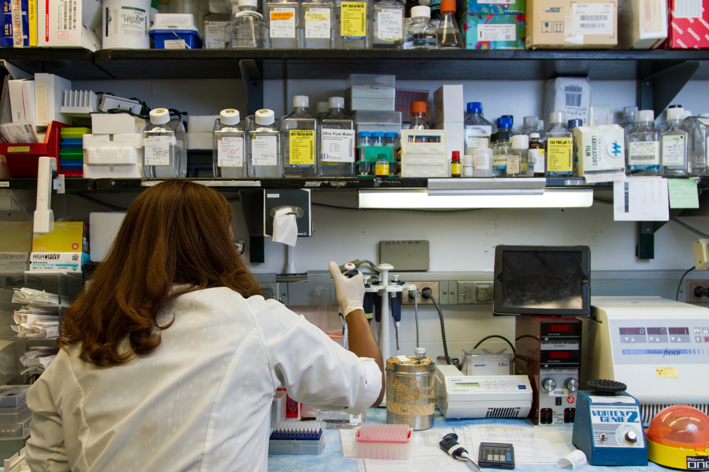
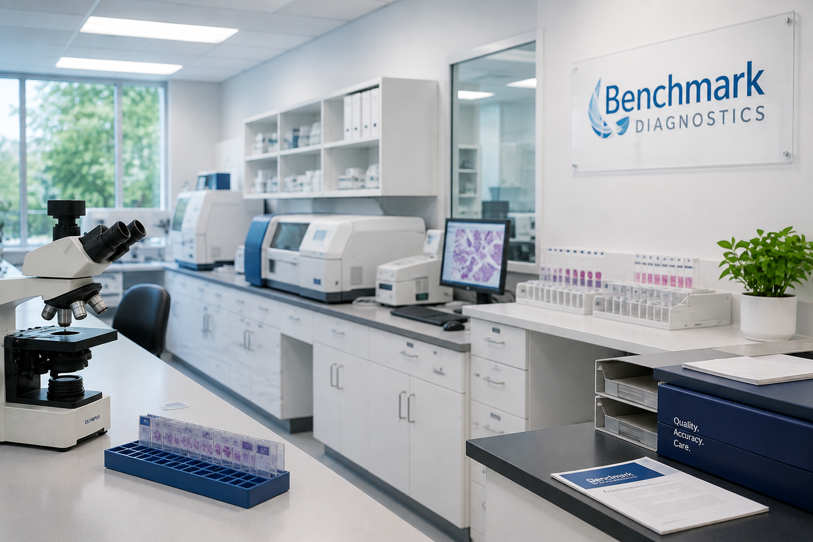
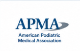
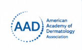
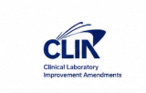
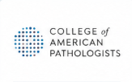

Our Mission
To provide physicians with accurate, timely, and clinically meaningful pathology services while maintaining a personalized and collaborative approach to patient care.
About Benchmark Diagnostics
Benchmark Diagnostics provides specialized dermatopathology and podiatric pathology services with a commitment to accuracy, collaboration, and responsive physician support.
Partner With Us
Our Purpose
To provide physicians with accurate, timely, and clinically meaningful pathology services while maintaining a personalized and collaborative approach to patient care.
To remain a trusted pathology partner through diagnostic excellence, physician collaboration, research, education, and continued innovation.
Leadership
Experienced pathology professionals dedicated to diagnostic quality, clinical collaboration, and physician service.
Lab Director and Dermatopathologist
Oversees laboratory operations and diagnostic quality while providing dermatopathology expertise and supporting physician collaboration at Benchmark Diagnostics.
Dermatopathologist
Provides dermatopathology diagnostic services and contributes to the evaluation of skin-related specimens and physician support at Benchmark Diagnostics.

Clinical Consultant, Dermatologist, and Dermatopathologist
Dr. Turgeon provides invaluable clinical insights during routine intradepartmental challenging case review conferences.
Our Story
Benchmark Diagnostics was established with the goal of providing physicians with specialized pathology expertise alongside responsive, personalized laboratory service.
Our approach emphasizes diagnostic quality, clear communication, and strong relationships with the physicians and healthcare organizations we serve.
As Benchmark Diagnostics continues to grow, those principles remain central to our work.

Research & Education
Benchmark Diagnostics supports continued research and education as part of our commitment to advancing the field of pathology.
Our research, publications, presentations, and educational activities contribute to ongoing learning and the exchange of knowledge throughout the medical community.
View Research & PublicationsQuality & Standards




Work With Benchmark
Contact our team to learn more about our pathology services and physician support.
Contact Our Laboratory